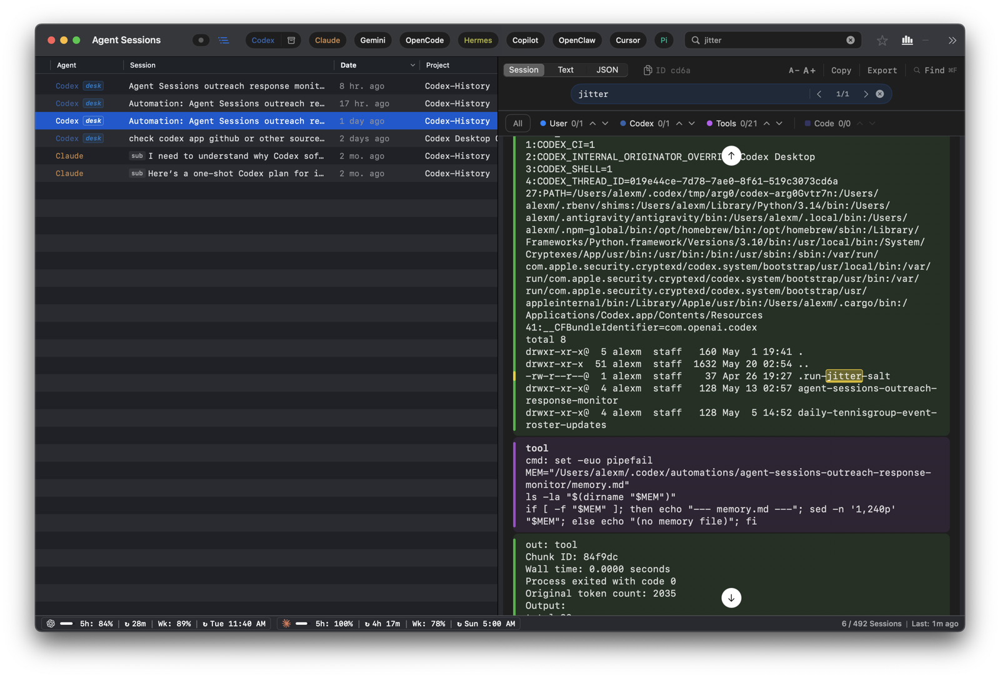

Local History Guide / Codex
Codex Local History: Search Codex CLI, Desktop, and VS Code Sessions on macOS
Codex sessions are often the record of how a task actually happened: the prompt, plan, tool call, patch output, command error, image input, or final reasoning boundary. Agent Sessions makes that local Codex history searchable across Codex CLI, Codex Desktop, and Codex VS Code surfaces.
Agent Sessions reads local Codex rollout files. It does not upload Codex transcripts or turn them into hosted project memory.

Where Codex Stores Local Data
Codex session logs use JSONL rollout files. The default root is:
~/.codex/sessionsIf CODEX_HOME is set, Agent Sessions follows:
$CODEX_HOME/sessionsCodex stores sessions in date-sharded folders:
YYYY/MM/DD/rollout-*.jsonlAgent Sessions also scans archived Codex session folders when they exist, so restored or archived Codex Desktop sessions can remain visible.
What Agent Sessions Does
- Lists Codex CLI, Codex Desktop, and Codex VS Code sessions in one Codex corpus.
- Shows row-level surface labels such as CLI, Desktop, or VS Code when that metadata is available.
- Full-text searches prompts, assistant text, tool calls, command output, errors, file paths, and image references.
- Supports archived Codex Desktop filtering and projectless Desktop chat grouping.
- Supports Codex resume workflows, including modern resume IDs and fallback
experimental_resumepaths.
What This Does Not Do
- Upload Codex transcripts to a hosted search service.
- Recover hidden model state that Codex never wrote locally.
- Decrypt opaque encrypted reasoning blobs.
- Replace Codex's own resume picker.
- Modify Codex rollout files.